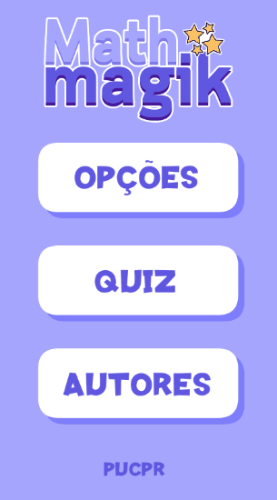
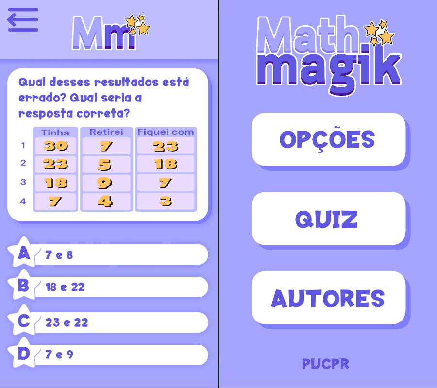
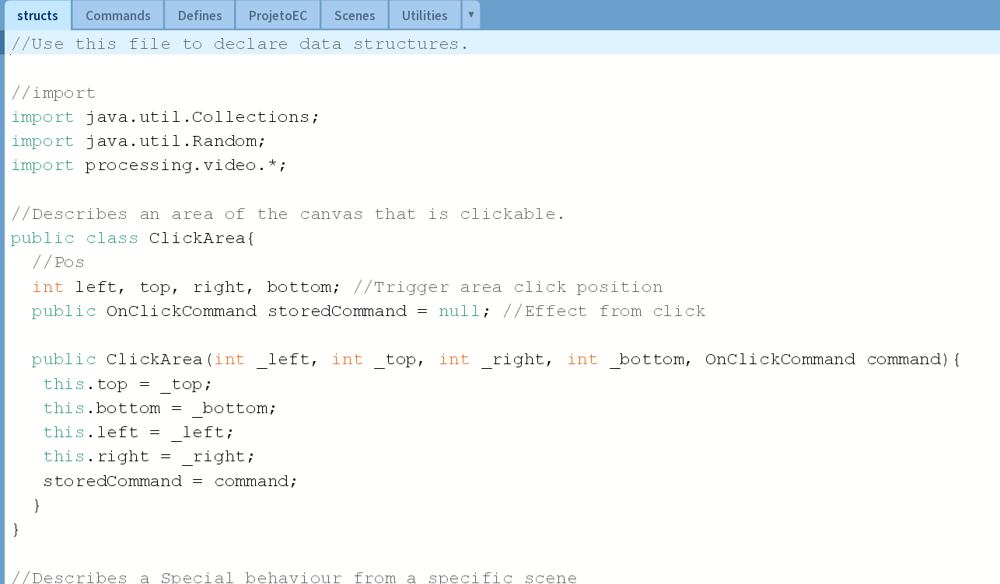

Math Magik
Experiência Criativa
Oque é o MathMagik?
Desenvolvido para a Máteria de Experiência Criativa, o Mathmagik busca permitir a crianças no começo do ensino fundamental treinar o conteúdo de matêmatica de forma rápida. Ele traz várias perguntas em formato de Quiz, porém a forma como foi estruturado permite facilmente que questões sejam adicionadas pela escola, ou até mesmo pelos próprios alunos.

Minha Contribuição
Eu fiquei responsável pela "direção" técnica do aplicativo, eu desenvolvi a base que permitiu simplificar a implementação de várias telas diferentes pelos membros do grupo, assim como o especificar o sistema que carrega questões direto da pasta da aplicação, a lógica deste em si foi desenvolvida pela Anna. Encontrei e editei todos os efeitos sonoros usados no aplicativo usando o Audacity também.
Oque Aprendi
Foi um projeto muito interessante para mim, pois foi aqui que eu aprendi como realmente trabalhar em equipe pela primeira vez, todos os meus projetos completos
tinham sido feitos básicamente sozinhos até esse ponto, em outros projetos como Bill the Bunny eu já entrei em um grupo que tinha
tudo meio pronto, e eu só contribui pós planejamento.
Aprendi relativamente bastante sobre Java também, eu tinha feito algumas modificações para o minecraft no eclipse quando era criança, mas pegar um projeto
para planejar e produzir foi a minha primeira vez com esta língua.